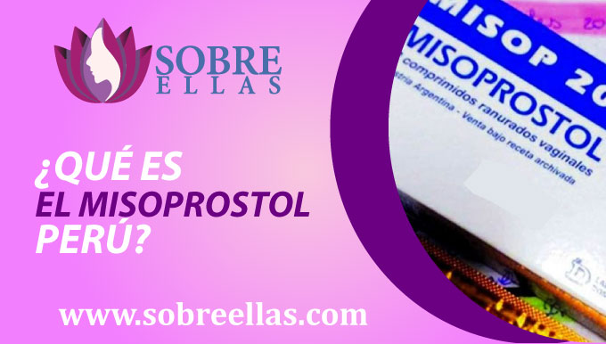

Misoprostol Precio
-
addContenido
Si estás buscando un medicamento que te ayude a abortar, nuestra recomendación es confiar a ojos cerrados de estas poderosas pastillas abortivas que se utilizan para inducir el parto, pero también se usa para tratar el sangrado posparto, los calambres y para prevenir el parto prematuro. Estas pastillas abortivas misoprostol precio se encuentran disponibles por nuestra página en forma de cápsulas, sin receta médica.
¿Qué es el misoprostol Perú?
El misoprostol peru en pastillas, son un medicamento usado normalmente por médicos ginecólogos y obstetras, su uso femenino y masculino a nivel mundial ha mejorado considerablemente, sobre todo al mencionar el primer caso. Este medicamento conocido también con el nombre de (Cytotec) tiene como uso combatir o tratar una variedad de afecciones médicas, incluidas las úlceras estomacales, la dismenorrea y el sangrado posparto. También se utiliza para interrumpir un embarazo, ya que posee la capacidad para inducir contracciones en el utero , lo que ha hecho que sea un medicamento ampliamente usadon en las complicaciones derivadas de las hemorragias durant la primera mitad del embarazo, como el aborto incompleto y el aborto retenido, en la inducción del trabajo de parto y en el control de la hemorragia posparto. El misoprostol está disponible con receta médica en Perú, pero también existen pocos lugares que lo ofrecen sin receta. En Perú el misoprostol en pastillas se encuentra a la venta como medicamento genérico.
Misoprostol pastilla abortiva
Cuando se trata de interrumpir un embarazo, hay algunas opciones disponibles. El método más común son las pastillas abortivas tradicionales, que se toman para inducir un aborto temprano. Sin embargo, también hay otras opciones disponibles. Una de estas opciones es el misoprostol, que es un medicamento utilizado para interrumpir un embarazo. Está hecho de la molécula de prostaglandina, una hormona que se produce en el cuerpo durante el trabajo de parto y el parto. Fuera de eso, este medicamento misoprostol también se usa para tratar úlceras y otros problemas estomacales.
¿Cómo se usa el misoprostol para interrumpir un embarazo?
El misoprostol se usa frecuentemente para interrumpir un embarazo de tres formas. La primera forma es tomar el medicamento por vía oral. La segunda forma es mediante el uso de un inserto vaginal.
Aplicacion vía Oral
La forma de consumirlo oralmente, consiste en la toma por mujeres que acaban de enterarse de su embarazo y desean terminar con el. Antes de tomar misoprostol, es importante hablar con tu médico acerca de tu embarazo y la condición específica que está tratando de tratar. Él se encargará de recomendarte la dosis de misoprostol que es mejor para ti. Sobre todo si es la primera vez que vas a consumir estas pastillas abortivas, el médico te dará una receta para el medicamento y tendrás que tomar el medicamento según lo prescrito. Si estás usando la presentación en píldoras orales de Misoprostol, es importante beber muchos líquidos mientras estás tomando el medicamento. También debe evitar comer alimentos durante al menos dos horas antes de tomar el medicamento. Después de tomar misoprostol, es importante esperar al menos dos horas antes de tener relaciones sexuales o hasta que el sangrado (efecto secundario) se detenga. También debe evitar beber alcohol previo, durante y después de estar tomando el medicamento.
Lugar donde se realizara el aborto
Recuerda que el primer paso a seguir consiste en encontrarte en un lugar tranquilo y cómodo, donde se llevará a cabo todo el proceso. En eso el médico a cargo te da la libertad completa de elegirlo, ya que el proceso a realizar es no invasivo.
Cantidad de Pastillas misoprostol a usar
La dosis va a variar según el tiempo de gestación que tengas, es por eso que lo recomendable siempre es consultar previamente con tu médico a cargo. La dosis común que suelen recomendar son las de 12 pastillas abortivas que se irán intercalando en 3 dosis cada 3 horas
Modo de uso de la pastilla abortiva misoprostol
Se debe colocar 4 pastillas entre las mejillas y las encías durante media hora (30 minutos), esperar a que se disuelvan para luego volver a repetir el procedimiento por 3 veces más dejando unas 3 horas de diferencia entre toma y toma.
Aplicacion via Sublingual
Si eliges ingerirlos de esta forma, no tienes por qué preocuparte ya que no es tan diferente a la toma por vía oral. Existen casos donde las mujeres acaban de enterarse de su embarazo y desean terminar con el. Antes de tomar misoprostol, es importante hablar con tu médico acerca de tu embarazo y la condición específica que está tratando de tratar. Él se encargará de recomendarte la dosis de misoprostol que es mejor para ti. Sobre todo si es la primera vez que vas a consumir estas pastillas abortivas, el médico te dará una receta para el medicamento y tendrás que tomar el medicamento según lo prescrito. Si estás usando la presentación en píldoras orales de Misoprostol, es importante beber muchos líquidos mientras estás tomando el medicamento. También debe evitar comer alimentos durante al menos dos horas antes de tomar el medicamento. Después de tomar misoprostol, es importante esperar al menos dos horas antes de tener relaciones sexuales o hasta que el sangrado (efecto secundario) se detenga.
Lugar donde se realizara el aborto
Recuerda que el primer paso a seguir consiste en encontrarte en un lugar tranquilo y cómodo, donde se llevará a cabo todo el proceso. En eso el médico a cargo te da la libertad completa de elegirlo, ya que el proceso a realizar es no invasivo.
Cantidad de Pastillas Misoprostol a usar
La dosis va a variar según el tiempo de gestación que tengas, es por eso que lo recomendable siempre es consultar previamente con tu médico a cargo. La dosis común que suelen recomendar son las de 12 pastillas abortivas que se irán intercalando en 3 dosis cada 3 horas.
Modo de uso de la pastilla abortiva misoprostol
Se debe colocar 4 pastillas bajo la lengua durante media hora (30 minutos), esperar a que se disuelvan para luego volver a repetir el procedimiento por 3 veces más dejando unas 3 horas de diferencia entre toma y toma.
Aplicación vía vaginal
Son pocas las mujeres que se atreven a realizar el consumo de las pastillas abortivas misoprostol de forma vaginal, pero esto no es cosa del otro mundo, sobre todo para casos de mujeres que recién acaban de enterarse de su embarazo y desean terminar con el. Antes de tomar misoprostol, es importante hablar con tu médico acerca de tu embarazo y la condición específica que está tratando de tratar. Él se encargará de recomendarte la dosis de misoprostol que es mejor para ti. Sobre todo si es la primera vez que vas a consumir estas pastillas abortivas, el médico te dará una receta para el medicamento y tendrás que tomar el medicamento según lo prescrito. Si estás usando la presentación en píldoras orales de Misoprostol, es importante beber muchos líquidos mientras estás tomando el medicamento. También debe evitar comer alimentos durante al menos dos horas antes de tomar el medicamento. Después de tomar misoprostol, es importante esperar al menos dos horas antes de tener relaciones sexuales o hasta que el sangrado (efecto secundario) se detenga. También debe evitar beber alcohol previo, durante y después de estar tomando el medicamento.
Lugar donde se realizara el aborto
Recuerda que el primer paso a seguir consiste en encontrarte en un lugar tranquilo y cómodo, donde se llevará a cabo todo el proceso. En eso el médico a cargo te da la libertad completa de elegirlo, ya que el proceso a realizar es no invasivo.
Cantidad de Pastillas misoprostol a usar
La dosis va a variar según el tiempo de gestación que tengas, es por eso que lo recomendable siempre es consultar previamente con tu médico a cargo. La dosis común que suelen recomendar son las de 12 pastillas abortivas que se irán intercalando en 3 dosis cada 3 horas
Modo de uso de la pastilla abortiva misoprostol
Se recomienda que para este modo de aplicación, que la paciente se encuentre acostada boca arriba y debe colocar 4 pastillas entre los labios vaginales durante media hora (30 minutos), esperar a que se disuelva (permaneciendo acostada) para luego volver a repetir el procedimiento por 3 veces más dejando unas 3 horas de diferencia entre toma y toma
Efectos Secundarios
Las pastillas abortivas misoprostol pueden causar varios efectos secundarios, los más comunes de los cuales son diarrea y vómitos. Algunas personas también experimentan dolor, fiebre e ictericia. Si experimenta algún efecto secundario mientras está tomando misoprostol, debe comunicarse con su médico. Algunos de los efectos secundarios más comunes del misoprostol incluyen calambres, diarrea y vómitos.
Misoprostol Lima
Puedes encontrar pastillas abortivas misoprostol en lima, en cualquier farmacia o centro de salud autorizado, pero para acceder a ella deberás contar con una receta médica. Esta pastillas para el aborto estan siendo utilizadas hoy en dia dentro de lima al igual que en otros paises para interrumpir lo embarazos no deseados. Muchas mujeres se ven en la necesidad de acceder a distintos medios para realizarse un aborto ilegal, debido a que aun no ha sido legalizado en nuestro pais. Recuerda que si te encuentras en lima y eres una de las muchas mujeres que buscan una solución, rápida, segura,confiable y no cuentas con receta medica, puedes escribir a nuestros números de contacto que dejaremos dentro de nuestra página, para que nuestro equipo de especialistas pueda asesorarte durante tu aborto no invasivo.
Misoprostol Venta
Realizar la venta de misoprostol en muchos países, suele no ser complicado, pero para las personas que se encuentran en peru y desean vender o simplemente adquirir este producto se vuelve un poco complicado, la adquisición de forma legal . En primer lugar por el tema de las legalidades de la venta de misoprostol. En segundo lugar, esperará tener una buena comprensión de cómo funciona el misoprostol. En tercer lugar, tendrás que asegurarte de que tienes un buen producto. Asegúrate de que estas pastillas abortivas que estás adquiriendo son de alta calidad y libres de cualquier contaminante. Existen muchos lugares que te lo pueden ofrecer sin receta médica, pero en su mayoría no garantizan la seguridad y el asesoramiento durante el proceso a diferencia de nosotros.
Pastillas abortivas nombres y precios
Las pastillas abortivas se utilizan para interrumpir un embarazo. Hay muchos tipos diferentes de pastillas abortivas, cada una con un mecanismo de acción diferente. El tipo más común de píldora abortiva es la mifepristona (RU486), que impide que la hormona progesterona sea efectiva. Esto hace que el útero se contraiga y expulse el embarazo. Otro tipo de píldora abortiva es el misoprostol (Cytotec), que funciona al contraer el útero y dificultar la respiración del bebé. Algunas píldoras abortivas combinan los dos mecanismos de acción, de modo que el aborto comienza bloqueando la hormona progesterona y termina haciendo que el útero se contraiga y expulse al bebé. También hay otros tipos de píldoras abortivas, pero estas tres son las más comunes.
Ampollas abortivas
Las ampollas abortivas son pequeñas protuberancias rojas que se forman en la piel alrededor de donde se ha realizado la cirugia del aborto, suelen presentarse mayormente en mujeres que se sometieron a abortos qururgicos invasivos. Pueden ser dolorosos y pueden ser difíciles de tratar. Algunas de las causas más comunes se deben a una serie de factores, incluido el uso de dilatadores o herramientas quirúrgicas que son demasiado pequeñas o demasiado apretadas. También pueden ser causados por la exposición a bacterias o infecciones durante el procedimiento de aborto. Las ampollas de aborto deben tratarse tan pronto como se noten. Si no se tratan, pueden infectarse y pueden requerir tratamiento en un hospital. Es por eso que realizarse un aborto quirurgico puede ser un procedimiento muy importante, y debe decidirse en función de los mejores intereses de la mujer y el del bebé. Este es un efecto secundario relativamente raro, pero pueden ser muy graves si no se tratan correctamente.
¿Qué tan efectivo es el misoprostol para interrumpir un embarazo?
La forma más segura y menos complicada de interrumpir un embarazo, según estudios, es mediante el consumo de pastillas abortivas. Este proceso tiene una eficacia del 85% según estudios, siempre y cuando se respeten las indicaciones dictadas por el médico responsable al pie de la letra.